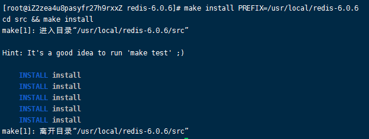
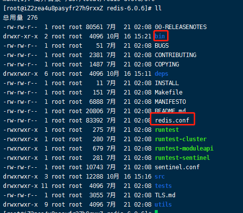
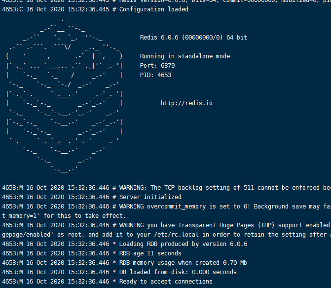

002-在Linux的安装
1 安装
- 下载redis
从官网下载对应的版本，或者复制下载链接，到linux系统中执行下载并解压
# 进入自建的download目录
cd /root/download
# 下载redis
wget http://download.redis.io/releases/redis-6.0.6.tar.gz
# 解压
tar -zvxf redis-6.0.6.tar.gz
- 复制到
/usr/local目录里面
一般都会把应用存到local目录里面，将解压的复制到local目录里面
mv /root/download/redis-6.0.6 /usr/local/redis-6.0.6
- 编译和安装
# 进入目录
cd /usr/local/redis-6.0.6/
# 编译
make
# 安装
make install PREFIX=/usr/local/redis-6.0.6
这里加了个 PREFIX=/usr/local/redis-6.0.6，作用是编译的时候用于指定程序存放的路径
比如我们现在就是指定了redis必须存放在/usr/local/redis-6.0.6目录。
假设不添加该关键字Linux会将可执行文件存放在/usr/local/bin目录，库文件会存放在/usr/local/lib目录。配置文件会存放在/usr/local/etc目录。其他的资源文件会存放在usr/local/share目录。
目录也方便后续的卸载，后续直接rm -rf /usr/local/redis-6.0.6 即可删除redis。
最终执行结果如下

再执行
ll
可以查看目录结构多了几个

- 启动redis
在/usr/local/redis-6.0.6/bin里面启动redis-server
# 进入bin目录
cd ./bin
# 启动redis服务端，指定配置文件位置
./redis-server ../redis.conf
出现下面界面说明启动成功

上面的启动方式是前台方式启动，启动后，按ctrl+c或者回车键就会关闭redis服务。
如果想要后台服务方式启动，则只用下面命令
# 和上面命令的区别是这里最后加个 & 符号
./redis-server ../redis.conf &
后台服务方式启动的，按ctrl+c或者回车键后，redis服务依旧会继续运行
- 访问redis
另起一个窗口连接服务器，然后进入redis的bin目录
# 进入bin目录 cd /usr/local/redis-6.0.6/bin/
启动redis客户端
./redis-cli
查看redis所有数据
keys *

## 2 查看redis进程
```shell
ps -ef |grep redis
3 停止redis
启动用的是redis-sever命令，停止用的是客户端的redis-cli
./redis-cli shutdown
# 再执行查看进程，已经查询不到了
ps -ef |grep redis